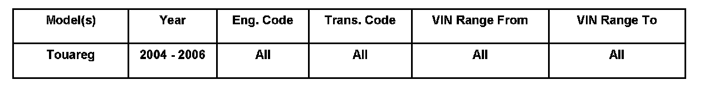
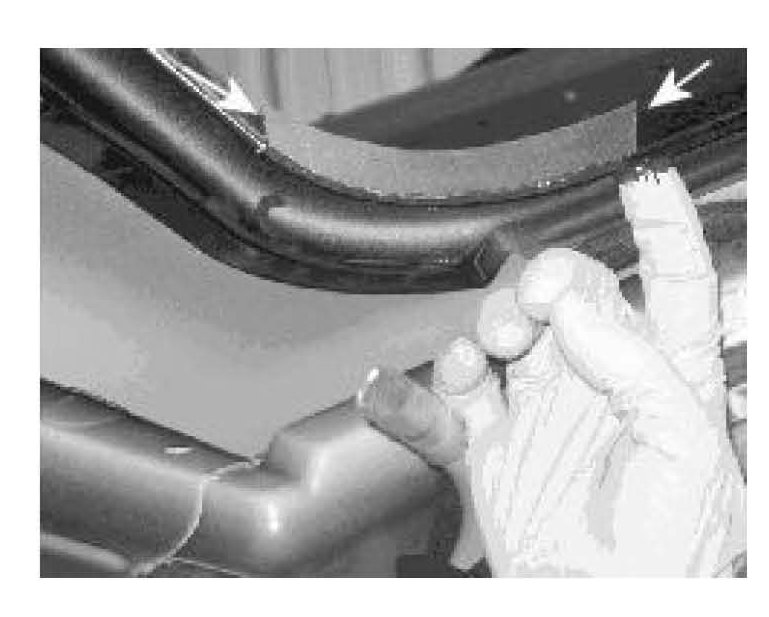
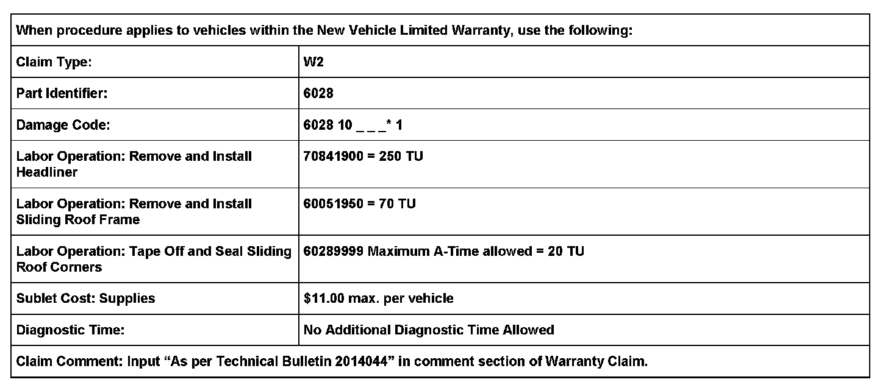
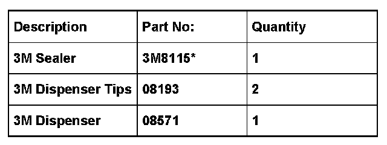

Body - Water Leaks From The Sliding Roof
60 07 03Apr. 18, 2007
2014044 Supersedes T.B. Group 60 number 07 01 dated Jan. 19, 2007 due to change in sublet costs and additional Required Parts and Tools table information.

Affected Vehicles
Condition
Water Leak, Sliding Roof
Technical Background
Insufficient sealing corner areas between roof skin and reinforcement frame.
Production Solution
Improved bonding between sliding roof and roof skin.
Service
^ Remove Headliner, see Repair Manual Group 70, headliner, in ElsaWeb.
^ Remove sliding roof frame, see Repair Manual Group 60, sliding roof, in ElsaWeb.

^ Mask off all 4 corners of sliding roof between the roof skin and the reinforcement frame with masking tape (arrows).
^ Using 3M(TM) sealer 3M8115, run a 1/8 in. bead of sealer approximately 3 inches fore and aft of the sliding roof corner, along the seam of the roof skin and the reinforcement frame.
^ Using your finger, smooth the bead of sealer between the gap of the roof skin and reinforcement frame.
^ Remove any access sealer.
^ Repeat sealing procedures on all 4 corners of the sliding roof.
^ Remove the masking tape.
^ Install sliding roof frame, see Repair Manual Group 60, sliding roof, in ElsaWeb.
^ Install Headliner, see Repair Manual Group 70, headliner, in ElsaWeb.
Warranty

*)Code per warranty vendor code policy.

Required Parts and Tools
Additional Information
All part and service reference provided in this Technical Bulletin are subject to change and/or removal. Always check with your Parts Dept. and Repair Manuals for the latest information.